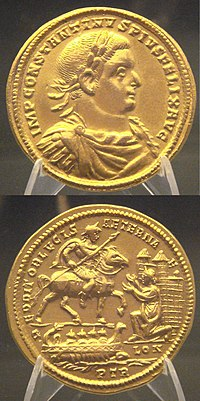
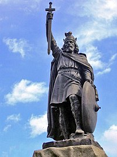
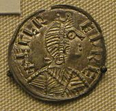
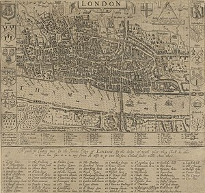
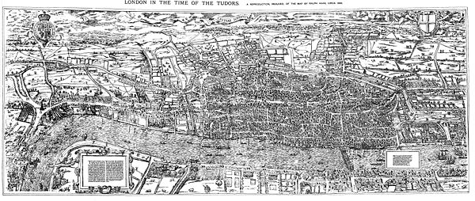
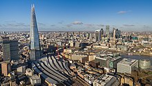

Table of Contents
- Roman London
- Anglo-Saxon London
- Tudor London
- 21st Century London
Roman London (AD 47-410)
Londinium was established as a civilian town by the Romans about four years
after the invasion of AD 43. London, like Rome, was on the point of the river

where it was narrow enough to bridge and the strategic location of the city provided easy access to much of Europe. During the 2nd century Londinium was at its height and replaced Colchester as the capital of Roman Britain. Its population was around 60,000 inhabitants. It boasted major public buildings, including the largest basilica north of the Alps, temples, bath houses, an amphitheatre and a large fort for the city garrison.
Anglo-Saxon London (5th century – 1066)
Until recently it was believed that Anglo-Saxon settlement initially avoided the area immediately around Londinium. However, the discovery in 2008 of an Anglo-Saxon cemetery at Covent Garden indicates that the incomers had  begun to settle there at least as early as the 6th century and possibly in the 5th. The main focus of this settlement was outside the Roman walls, clustering a short distance to the west along what is now the Strand, between the Aldwych and Trafalgar Square. It was known as Lundenwic, the -wic suffix here denoting a trading settlement. Recent excavations have also highlighted the population density and relatively sophisticated urban organisation of this earlier Anglo-Saxon London, which was laid out on a grid pattern and grew to house a likely population of 10–12,000.
Early Anglo-Saxon London belonged to a people known as the Middle Saxons, from whom the name of the county of Middlesex is derived, but who probably also occupied the approximate area of modern  and Surrey. However, by the early 7th century the London area had been incorporated into the kingdom of the East Saxons. In 604 King Saeberht of Essex converted to Christianity and London received Mellitus, its first post-Roman bishop.
Tudor London (1485–1603)
In 1475, the Hanseatic League set up its main English trading base (kontor) in London, called Stalhof or Steelyard. It existed until 1853, when the Hanseatic cities of Lübeck, Bremen and Hamburg sold the property to South Eastern Railway. Woollen cloth was shipped undyed and undressed from 14th/15th century London to the nearby shores of the Low Countries, where it was considered indispensable.
During the Reformation, London was the principal early centre of Protestantism in England. Its close commercial connections with the Protestant heartlands in northern continental Europe, large foreign mercantile communities, disproportionately large number of literate inhabitants and role as the centre  of the English print trade all contributed to the spread of the new ideas of religious reform. Before the Reformation, more than half of the area of London was the property of monasteries, nunneries and other religious houses.
Henry VIII's "Dissolution of the Monasteries" had a profound effect on the city as nearly all of this property changed hands. The process started in the mid 1530s, and by 1538 most of the larger monastic houses had been abolished. Holy Trinity Aldgate went to Lord Audley, and the Marquess of Winchester built himself a house in part of its precincts. The Charterhouse went to Lord North, Blackfriars to Lord Cobham, the leper hospital of St Giles to Lord Dudley, while the king took for himself the leper hospital of St James, which was rebuilt as St James's Palace.
The period saw London rapidly rising in importance among Europe's commercial centres. Trade expanded beyond Western Europe to Russia, the Levant, and the Americas. This was the period of mercantilism and monopoly trading companies such as the Muscovy Company (1555) and the British East India Company (1600) were established in London by Royal Charter. The latter, which ultimately came to rule India, was one of the key institutions in London, and in Britain as a whole, for two and a half centuries.
Immigrants arrived in London not just from all over England and Wales, but from abroad as well, for example Huguenots from France; the population rose from an estimated 50,000 in 1530 to about 225,000 in 1605. The growth of the population and wealth of London was fuelled by a vast expansion in the use of coastal shipping.
The late 16th and early 17th century saw the great flourishing of drama in London whose preeminent figure was William Shakespeare. During the mostly calm later years of Elizabeth's reign, some of her  courtiers and some of the wealthier citizens of London built themselves country residences in Middlesex, Essex and Surrey. This was an early stirring of the villa movement, the taste for residences which were neither of the city nor on an agricultural estate, but at the time of Elizabeth's death in 1603, London was still very compact.
21st century
Around the start of the 21st century, London hosted the much derided Millennium Dome at Greenwich, to mark the new century. Other Millennium projects were more successful. One was the largest observation wheel in the world, the "Millennium Wheel", or the London Eye, which was erected as a temporary structure, but soon became a fixture, and draws four million visitors a year. The National Lottery also released a flood of funds for major enhancements to existing attractions, for example the roofing of the Great Court at the British Museum.
The London Plan, published by the Mayor of London in 2004, estimated that the population would reach 8.1 million by 2016, and continue to rise thereafter. This was reflected in a move towards denser, more  urban styles of building, including a greatly increased number of tall buildings, and proposals for major enhancements to the public transport network. However, funding for projects such as Crossrail remained a struggle.
On 6 July 2005 London won the right to host the 2012 Olympics and Paralympics making it the first city to host the modern games three times. However, celebrations were cut short the following day when the city was rocked by a series of terrorist attacks. More than 50 were killed and 750 injured in three bombings on London Underground trains and a fourth on a double decker bus near King's Cross.
London was the starting point for countrywide riots which occurred in August 2011, when thousands of people rioted in several city boroughs and in towns across England. In 2011, the population grew over 8 million people for the first time in decades. White British formed less than half of the population for the first time.
In the public there was ambivalence leading-up to the 2012 Summer Olympics in the city, though public sentiment changed strongly in their favour following a successful opening ceremony and when the anticipated organisational and transport problems never occurred.
Additional Fun Facts!
- London is the smalleat city in England.
- Over 300 languages are spoken in London.
- Over 8.7 Million people live in London.
- The Tower of London houses six ravens.
- Black Cab drivers undergo lengthy training before they are allowed to drive.